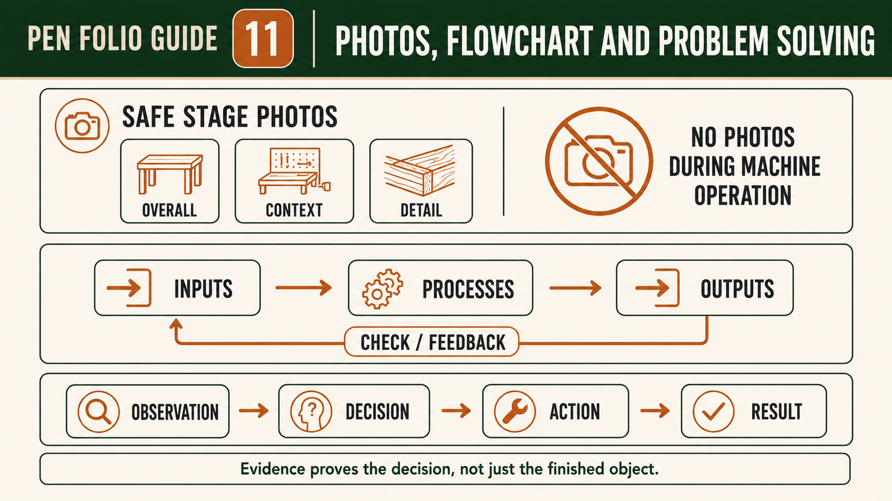
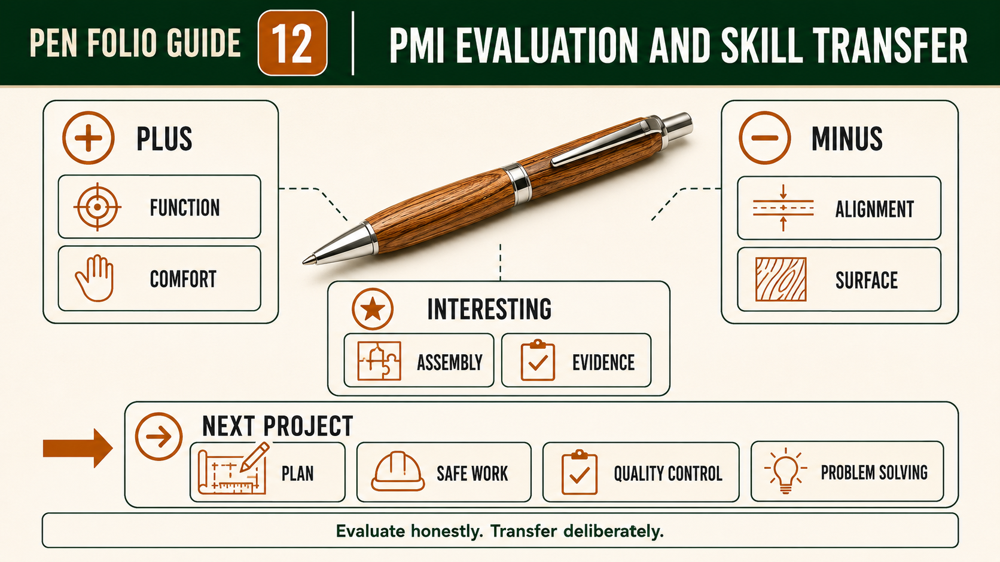

Module presentation
Learn with the slides
Use the presentation to preview Photographing Pen stages and explaining problem solving, Using PMI to evaluate the completed Pen, Final reflection, evidence review and skill transfer before working through the theory, videos, checks and written evidence.
Weeks 19-20
This module
Photograph authentic stages, evaluate the completed Pen with PMI and review the full evidence package.
Your work
Student details
Your entries save automatically in this browser. Use Print / Save PDF before leaving the page.
Theory 1
Photographing Pen stages and explaining problem solving
Purposeful evidence photography records how the Pen developed, what decisions were made and how problems were managed. It is different from taking several attractive photographs after the project is complete. Final images can show the finished appearance, but they cannot reliably prove what happened during material selection, marking, drilling, turning, surface preparation, finishing or assembly. Strong folio evidence is collected progressively at meaningful stages. Each photograph should have a clear reason for being included and should help the reader understand the work. The aim is not to photograph everything; it is to capture enough authentic evidence to explain the important stages, checks, decisions and outcomes.
Photography must occur only at a safe time approved by the teacher. Students must not hold a phone, camera or other device while operating machinery, handling a hazardous product or completing a task that requires full attention. A photograph should be taken only after the equipment is safely stopped and the work is in the condition required by the school procedure. Another approved person may take a photograph where local rules allow, but this does not change the safety requirements. A photograph of a setup also does not prove that the work was safe. Safety is demonstrated through actual controls, teacher supervision, authorised procedures and accurate written records.

A useful evidence set combines overall, context and detail views. An overall view identifies the project stage and shows the Pen parts or workspace in a clear arrangement. A context view helps explain how the evidence relates to the approved resource, teacher checkpoint or surrounding stage. A detail view focuses on a specific feature such as a grain reference, developing surface, visible defect, aligned pair or finished transition. Stage labels, dates or approved file names make the sequence easier to follow. Images should be clear, correctly oriented and close enough to show the intended evidence without hiding important context or including unnecessary clutter.
Before-and-after comparisons are especially useful for explaining problem solving. The first photograph should show the genuine condition that caused concern, not a recreated fault arranged after the work was completed. The second should show the result after the teacher-approved decision or correction. A strong caption can follow the observation–decision–action–result structure: identify what was observed, explain the decision made, name the approved action taken and state the result that was checked. For example, a student might record that an uneven surface was observed, further work was paused, teacher advice was obtained, and the later inspection showed a more consistent result.
Teacher checkpoints strengthen the reliability of photographic evidence, but the caption should explain what the teacher checked rather than merely writing 'teacher approved'. Record the relevant project stage, the criterion being considered and whether the work was authorised to continue. If a problem could not be corrected, document it honestly and explain its effect on the finished Pen. Authentic evidence may show uncertainty, a stopped process or an imperfect outcome. This is often more valuable than a staged completion photograph because it demonstrates judgement, responsibility and learning. Problem solving is proved by the reasoning and verified response, not by pretending that no difficulty occurred.
Students must also follow school privacy, device and submission rules. Photographs should focus on the Pen, approved equipment and relevant evidence rather than showing identifiable people, personal information or another student's work without permission. File names and captions should follow the local submission system, and students should confirm how images are saved, transferred and included in the report. Do not assume that taking or uploading a photograph automatically submits the folio. Before final submission, check that every image is readable, placed in the correct sequence and supported by a caption that explains its purpose. A smaller set of strong, truthful photographs is better than many unexplained images.
- Take photographs only at teacher-approved safe stop points, never during unsafe machine or product use.
- Combine overall, context and detail views to explain each significant Pen stage.
- Label and sequence images so the project's progress can be followed clearly.
- Use observation–decision–action–result captions for genuine problem-solving evidence.
- Follow school privacy, device, file-naming and local submission requirements.
Theory 2
Using PMI to evaluate the completed Pen
A PMI evaluation helps you make a balanced, evidence-based judgement about the completed Pen. PMI stands for Plus, Minus and Interesting. Plus identifies successful features and explains why they were successful. Minus identifies limitations, faults or weaker outcomes and explains their effect. Interesting records discoveries, unexpected results, useful questions or ideas worth testing in future work. A strong PMI is not a list of praise and complaints. It compares the finished Pen and the manufacturing process with the approved project criteria, using photographs, observations, quality records, teacher checkpoints and user feedback as evidence.
The Plus section should identify specific strengths in function, comfort and appearance. You might judge whether the completed Pen performs its intended writing function, whether an approved user considers it comfortable to hold, and whether the two timber bodies appear balanced and aligned. Grain continuity can also be evaluated by checking whether the paired figure remains visually connected across the assembled Pen. Avoid unsupported claims such as saying the Pen works perfectly or suits every user. Instead, describe what was observed, who provided feedback where relevant, and how the result compared with the approved kit references and your selected design intention.
The Minus section should identify genuine limitations without treating every minor imperfection as a disaster. Inspect the surface for visible marks, uneven areas or inconsistent transitions, then examine the assembly for misalignment, gaps, damage or features that do not appear as resolved as intended. Consider whether any loss of grain continuity affects the overall appearance. Process weaknesses may also belong here, such as a checkpoint completed too late, unclear marking evidence or unnecessary material removal. For each Minus point, explain the likely cause and effect. A useful evaluation states what happened, why it mattered and what should change next time.

The Interesting section allows you to record learning that is not simply positive or negative. You may have noticed that the grain appeared different after the timber became cylindrical, that a small profile change affected user judgement, or that careful staging made assembly easier to inspect. You can also consider social and environmental impacts, including useful product life, gift value, skill development, material efficiency, waste and the challenge of disposing of mixed timber, metal and plastic components. These observations should remain qualified. Do not claim that the actual timber, finish or kit is sustainable unless reliable project information supports that conclusion.
Your PMI should also evaluate process control, safety and evidence. Consider whether you followed the supplied Pen Making resource, teacher demonstrations and workshop SOP; stopped when uncertain; used teacher checkpoints; and recorded the controls actually applied. Photographs alone do not prove safe work, so connect images with dated notes, WMS entries and teacher approval records. Judge whether the folio makes the production sequence traceable from timber selection through marking, drilling, turning, surface preparation, finishing and assembly. Missing or weak evidence should be acknowledged because the assessment considers both the completed Pen and the quality of the project report.
Finish the PMI by turning observations into one realistic improvement. Use a simple scaffold: criterion, evidence, judgement, cause and next action. For example, identify the criterion being judged, describe the photograph, user comment or quality check that supports your view, state whether the result met the intention, explain the likely reason, and propose a practical improvement controlled by the approved resource and teacher guidance. This reasoning is more valuable than saying you would try harder. A strong final evaluation recognises success, admits limitations and shows exactly how learning from this Pen could improve a future project.
- Plus: identify a specific strength, name the criterion and support the judgement with evidence.
- Minus: identify a limitation, explain its cause and describe its effect on quality or process.
- Interesting: record a discovery, trade-off, impact or question that developed during the project.
- Compare: judge function, comfort, alignment, grain continuity, surface, assembly, process control and evidence.
- Improve: propose one realistic next action and explain how you would check whether it worked.
Theory 3
Final reflection, evidence review and skill transfer
The final reflection brings together your Pen, your project report and all collected evidence to answer one question: do your claims match what actually happened? This is a verification step, not a place to add new content or guess missing details. Read your folio from start to finish and check that each statement is supported by a photograph, note, product label, teacher checkpoint or another reliable record. Where a claim cannot be supported, either add the missing evidence if it exists or revise the claim so it is accurate. The goal is a truthful, traceable account of how the Pen was planned, made, checked and evaluated.
Begin with an evidence review. Confirm that key stages are present and in sequence: timber selection and inspection, marking and orientation, drilling and swarf control, sleeve preparation, mandrel staging, turning, surface preparation, finishing and assembly. Check that each stage includes at least one clear image or note, a short explanation of purpose and a link to an approved source or teacher checkpoint. Ensure file names, dates and stage labels are consistent so another person can follow your process. Where images are unclear, duplicated or out of order, replace or relabel them. Where captions are vague, rewrite them to explain observation, decision, action and result.

Next, evaluate your growth across the course. Planning growth may be shown by a clearer cutting list, a more specific Work Method Statement and a more accurate production flowchart. Safe work growth is shown by using the hierarchy of controls, stopping when uncertain and recording teacher approvals rather than relying on assumptions. Turning growth appears in how you managed alignment, symmetry, grain continuity and gradual material removal. Quality control growth is shown by repeated check–decide–act cycles, inspection between stages and honest reporting of issues. Do not invent improvement; point to real examples in your evidence and explain what changed and why it matters.
In your final reflection, name the project stage, cite the evidence you collected and explain the decision you made, rather than making a vague claim about your work. For IND5-3, identify evidence showing how you selected and used suitable tools, equipment and processes under approved procedures, such as a labelled process photo, safety check or production record. For IND5-4, explain how your evidence shows that you selected, justified and used relevant materials for a specific application, including the timber, Pen components or approved finishing material. For IND5-7, describe a skill, process or material decision from the Pen project that you could transfer to a new context or later project, and explain how you would adapt it. For IND5-8, use specific evidence to evaluate the Pen's functional, economic, aesthetic, environmental and construction qualities, including both strengths and areas for improvement. Keep each statement honest and evidence-based: state what happened, identify the evidence that supports it and explain why the decision mattered.
Identify transferable skills that you can carry into later projects. These include reading authoritative instructions, setting up clear references, maintaining alignment, using feedback loops, managing risk through controls, and documenting decisions with evidence. Transfer also includes habits such as clean staging, protecting finished surfaces, and stopping for uncertainty. Be specific about where each skill appeared in your Pen project and how you would apply it in a different context, such as another timber task. Avoid claiming universal expertise; focus on what you can do reliably now and what you would test or refine next time.
Complete practical checks before submission. Ensure files open correctly, images are clear, and the document prints to PDF without cropping important content. Confirm that privacy and local submission rules are followed and that all required sections are included. Use a concise reflection scaffold to finish: state one confirmed strength with evidence, one limitation with cause, one improvement with a check method, and one transferable skill with a future application. This keeps the reflection focused, honest and useful for your next project rather than repeating your PMI.
- Verify every claim with linked evidence; revise or remove unsupported statements.
- Check sequence, labels and file integrity so the process is easy to follow and submit.
- Show growth with specific examples in planning, safety, turning and quality control.
- Link evidence to IND5-3, IND5-4, IND5-7 and IND5-8 without claiming marks.
- State one strength, one limitation, one improvement and one transferable skill.
Guided practice
Weeks 19-20 knowledge checks
Choose an answer, check it and use the progressive hints and feedback to improve.
Apply your learning
Scaffolded written responses
Write first, use the feedback prompts, then compare your reasoning with the appropriate response example.
Finish the two-week block
Save your evidence
Your work saves in this browser, but browser storage is not the official submission. Save the completed page as a PDF before changing devices or clearing browser data.
No marks, answers or personal information are sent from this webpage.